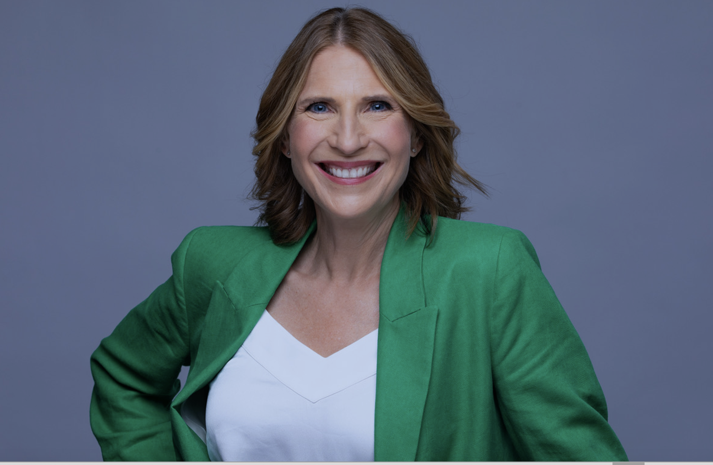
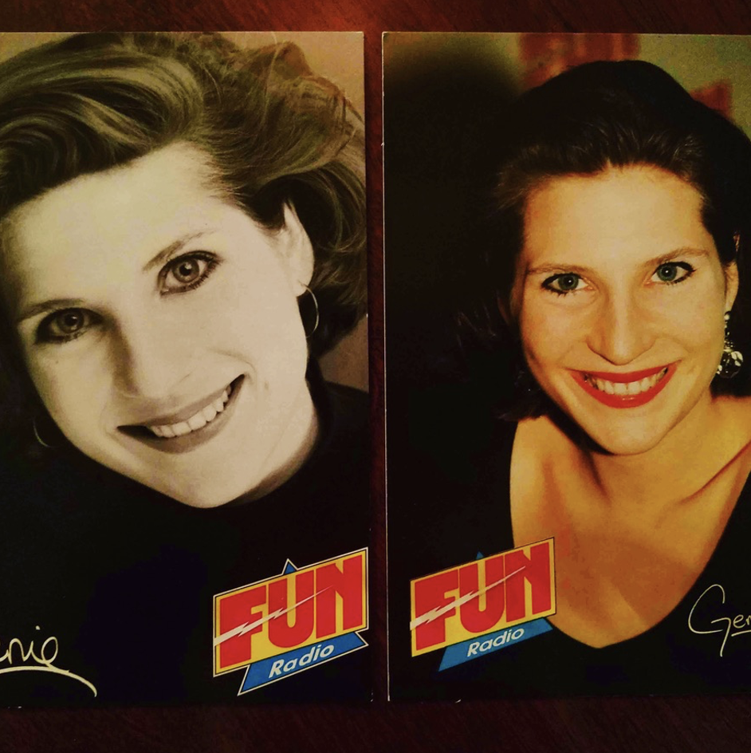
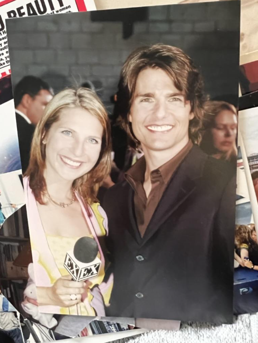
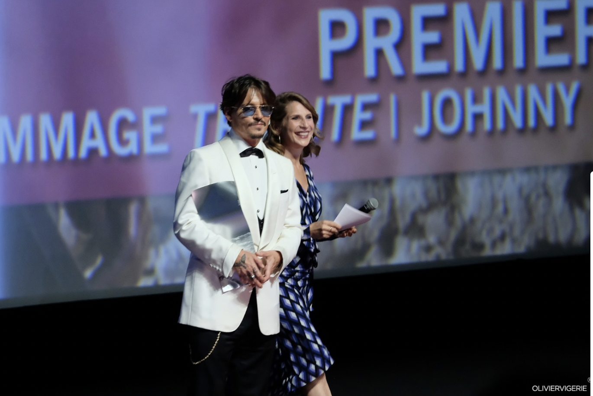
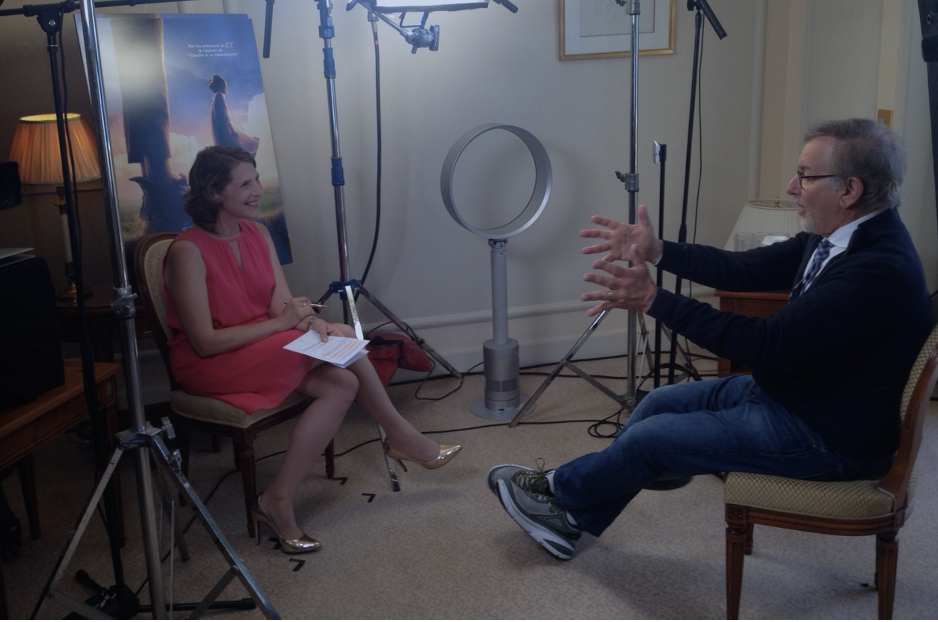
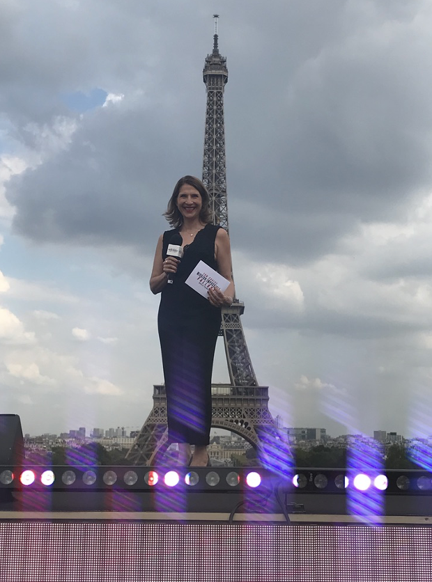
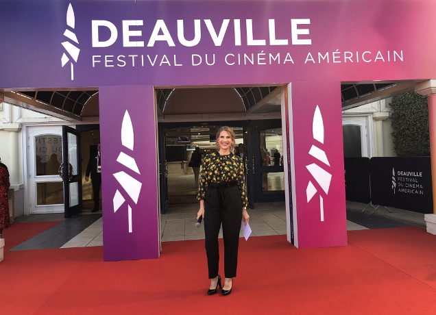
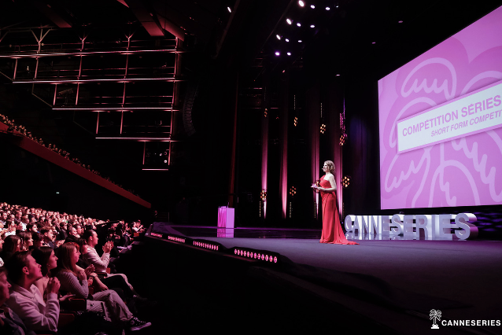
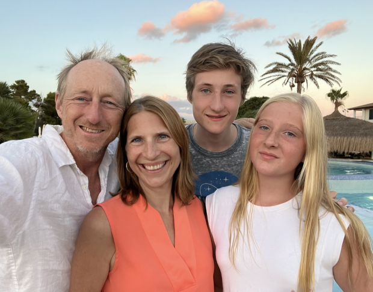

Paris is the most visited city in the world. You most likely have visited Paris at some point, perhaps staying for a few days or weeks. There is so much to do in this rich and vibrant city, that it is impossible to really grasp the Parisian experience in such a short time. If you really want to know Paris, consider living and working there like Genie Godula, originally from Barrington followed by Northwestern University’s Medill School of Journalism, who now resides in Paris where she and her British husband have raised their two children, including her son who is just finishing his first year at Northwestern’s McCormick School of Engineering.
First, a few facts about the Chicago-Paris Connection. Paris is Chicago’s “Sister City”. The relationship goes back to 1996 after a visit to Chicago by former Paris mayor, then President of France, Jacques Chirac, who proposed to Chicago Mayor Richard M. Daley that Chicago and Paris enter into a sister cities agreement. A joint committee was formed, the Comité Paris-Chicago, which set an agenda that included city planning, increasing French participation in the Chicago Marathon, the Chicago Jazz festival, economic development, fashion, arts and culture. The relationship continues to this day.
It turns out, there are over 15,000 Americans living in Paris, and that doesn’t include “unregistered” persons like me, who stay less than 90 days per year or who don’t bother to register. Not every American living in Paris is actually working, but many do, which brings them even closer to the true Parisian experience: renting or buying a flat, getting health insurance, receiving necessary healthcare, working at a job, being paid, paying French taxes, opening a bank account, and interacting with Parisians every single day.

Genie Godula has accomplished something few Americans have ever attempted. She’s a bilingual TV journalist living and working in France, reporting on French television channels. It’s a feat with roots in Chicagoland, where many members of her extended family still reside. Growing up in Barrington and attending Carmel Catholic High School in Mundelein, Genie took French lessons and had dreams of being a journalist. After graduating from Northwestern University’s Medill School of Journalism in 1988, she took an internship in London and then moved to Paris on a whim, a move that changed her life forever. She became a full-time resident of Paris, now married with two children, and then an anchor on France 24, a popular all-day news channel that broadcasts in English, French, Spanish and Arabic. She also hosts film premieres and other major events including at the Cannes Film Festival. In this interview, I talk with Genie about her path to this exciting career and life as a French-American.
Rob: What was it like for you growing up in the Northwest suburbs? Was there anything about your early years that could have foreshadowed where you are today?
Genie: I was born in Park Ridge, but my family moved to Barrington when I was five years old. Growing up in the suburbs of Chicago was the best place to have a childhood. I really loved the seasons, my friends and riding my bike around the neighborhood. In Barrington, we had a creek that ran behind our house, and I loved to go sit out by the creek. I just loved my childhood and the whole Midwest experience.
My dad was an attorney who worked downtown, and we would often hop on the train together on a Saturday and spend the day at his office. I did quite a bit of performing when I was young, including singing at the Lyric Opera of Chicago in the Children’s Choir. My experience included spending several summers working as a performer at Six Flags Great America in Gurnee. If there was something that was predestining me for being “on air”, it would have been that.
Rob: You certainly chose an excellent place to study journalism, the famous Medill School of Journalism at Northwestern University, my university by the way, where I’ve been working for 30 plus years at the Feinberg School of Medicine. How did those years in Evanston shape your career aspirations?
Genie: They shaped me in so many ways. First of all, just the experience of being a journalism major was huge. Medill taught me many things that I still use today, starting with some very simple rules. We had something called the Medill “F”, where if you had one factual error, you would get an “F” on your piece. It could be the most Nobel Prize worthy piece in the world, but if you made one factual error, say you got someone’s address wrong, you automatically got an “F”. From that I learned how to be very careful and thorough in my reporting, as well as learning those basic little journalism truisms such as, “when in doubt, leave it out,” or “keep it simple, stupid.” All those things I learned from my teachers at Medill are still useful to this day. Interestingly, I actually started in RTVF, Radio TV Film, in the School of Communications and transferred into Medill my junior year. That was great because when I was there, Medill did not have a big broadcast program, it was really print based. I wanted to do television because of my performance background, so I created my own career path by starting in RTVF, then getting some television experience and moving over to Medill for my final two years. One of my earliest job experiences during college was writing for a newspaper in Tempe, Arizona. That experience as a journalism major wouldn’t have happened if I had stayed with RTVF. The whole experience was great and resulted in my developing many close friendships at school. To this day, I am still friends with many people from Northwestern. I happen to be going to the States next week and will see one of my good Northwestern friends who is my son’s godfather. Many of my NU friends’ children have gone to Northwestern, as has my son who just finished up his first year in mechanical engineering. Chicago really is home for me, and I love Northwestern!
Rob: Go Wildcats! After graduating, you interned at BBC World Service in London. This was before many people were doing study-abroad programs as part of their undergraduate education. Why did you want this international experience?
Genie: Medill majors back then had to do the “teaching newspaper” program, where we left for a quarter to write for a real publication and mine was in Tempe. Northwestern at the time did not encourage journalism majors to study abroad, because they felt we would be missing too much school. After graduation, my one desire was to go overseas. London was easy because of the language. At least I thought it would be easy, but of course, there are all those cultural differences. I just really wanted to get away and have that experience. My international experiences actually started during childhood when I went to Europe with my parents. That taste of Europe started then and only grew with time. My mother, to her credit, really encouraged me. Soon after graduating from Northwestern, I was working on the Spirit of Chicago boat at Navy Pier as a singing waitress. Every time I would do my number, I would say, “I’m moving to London, I need your tips!” and that’s how the generous people of Chicago helped pay for my trip to start my career in London!
Rob: After your internship at the BBC, I understand you went on a trip to France and ended up staying and took a job as a singing waitress at the Hollywood Savoy in Paris. This sounds like such a fun time in your life. Take me back to that experience and tell me more about that job.
Genie: I did that, and it paid the bills! It was wonderful and so much fun. I was still in that parentheses period after graduation where I was not worried about having a real job yet, in a way, giving myself a break and a year to learn French. During that time, I met another Northwestern graduate who was working at the Hollywood Savoy, and she said, “Come audition!” So, I did and got this great, fun musical job. Paris has a fantastic jazz scene, very much like Chicago. Mondays, Wednesdays and Fridays were jazz nights at the Hollywood Savoy, with Blues on Tuesdays, and rock music Thursdays and Saturdays. We got to sing with some amazing groups because the way it worked, we would serve the meal while they were playing the first and the third sets, and then during the second set, we would actually get up and sing with them. We were dancing on bars and having a wonderful time!

Rob: How were you able to take the leap from singing waitress and break into jobs with the mainstream French media? That’s quite a leap!
Genie: Well, one of the things that I learned at Northwestern is the importance of networking. As a journalist, of course, you’re always asking questions and talking to people. During my singing waitress job, I realized that I didn’t want to perform professionally long term, so I would chat up the customers and everyone who would come in and say, “Do you know anyone who works in media? I’m actually a journalist, I went to a great journalism school, and would love to work here in Paris.” I finally met someone who knew someone who was a producer at Fun Radio, which is still a huge FM French radio station, like B96 or KISS FM in Chicago. They were doing an ad campaign where they wanted people with accents, and said, “We’d love someone with an American accent. Why don’t you come in?” So, I came in, recorded some jingles, and once my foot was in the door, I didn’t let go. I kept calling them and calling them every week, “I’m still around… I’d love to help… I love the radio.” It just so happened there was another American who was hosting an evening show, a man who had this great big Barry White type voice, but he had been in the Marines and was called up during the Gulf War. Suddenly, they had no American DJ on the air, and because I had been calling every single week, they decided, “Get that American woman on the air!” It literally was like the movie All About Eve. I had someone phonetically write out for me: “Now you’re listening to Madonna” — or whatever I had to say in French. I would phonetically read it out loud, and because it was a music show, it wasn’t that complicated. They eventually gave me my own show because they liked my accent and energy. From there, I moved into talk radio because that was a format just starting in France. It was all very new, and everyone was very excited. I hosted a show that was the first all-female talk radio show in France, something I’m really proud of. It was a lot of young kids calling up and asking for advice or just wanting to talk to me and my co-host. We would give them practical advice, which worked out great. I did that talk show for several years as my first French radio experience.
Rob: You’re now fluent in French with an American accent, of course. How did you end up doing this? It’s not that common you run into Americans living in France who didn’t come here already fluent, and you managed to become fluent while here in France. How did that work?
Genie: I didn’t take the traditional path like many expats. Most expats who come to Paris already have a job in the States and are transferred over here. They end up working in an English environment and don’t really need French. It’s also easy to make friends with other expats here, which creates this little expat bubble that self-selects. Whereas me coming on my own and first working at the radio station where hardly anybody spoke English, I had no choice but to learn. The joke is that I speak “street French” because no one at the radio station spoke formal French. It took me a long time to learn the more formal form, which would often get me into trouble with my boss. In a funny way, he actually liked it and thought it was charming, something a real French person could never get away with. Another thing that really helped me was that one of the bass players from a band at the Hollywood Savoy really wanted to learn English while I really wanted to learn French. We would meet and go for walks around the Parc de Buttes-Chaumont, which is incredibly beautiful by the way, and we would speak English for a half an hour and then French for another half hour. That really helped because we were at the same level. I also watched the Young and the Restless in French on channel TF1. The same stories keep repeating, so that helped. I also listened to Franceinfo, which is a news channel here that repeats the same news every seven minutes, so you would hear news stories over and over again. That all helped my comprehension a lot.

Rob: I was in Paris for a sabbatical in 2007-8 for 18 months. I had taken French in college and when I got over here, freshened up at Alliance Francaise. Then at work, all they wanted me to do was to translate papers into English, speak English and teach them how to give formal presentations in English. After work was a very different story, but in some ways, I unlearned French, while my French colleagues improved their English.
Genie: I came in 1990, so a good 15 years ahead of that. Even then, people in France didn’t speak as much English as they do now. There has really been a generational shift. When I first came, you would go to your local baker, they didn’t speak English, you had to speak French if you wanted a baguette. People would completely snub you or they wouldn’t talk to you if you didn’t speak French. You were forced to learn, whereas now it’s easier to get by only speaking English.
Rob: Very few Americans are TV reporters in France, you may actually be the only one. You now broadcast to an international audience but early on you did a lot of entertainment reporting in French for a French audience. How did the French audiences receive you?
Genie: I luckily always seemed to get a really warm reception from people. My American accent definitely makes me stand out. In the beginning I was worried, “I’m never going to be able to be on TV because I’ve got this accent.” Then I realized for some things, like hard news, with an accent it doesn’t work so well, but for what I was doing at that time – travel and entertainment reporting – the accent just adds a little bit of cachet, and people actually enjoy that. There’s a great phrase by the famous French artist Jean Cocteau, who said in French “What people criticize you for, cultivate it, because it’s who you are.” This is so true, and if I’m going to be that “American woman with the crazy accent who’s on French TV,” that’s who I’m going to be. This also helped me when I was doing entertainment reporting because I would show up to an interview with a big star like George Clooney and would be in the midst of all these French journalists who were saying “Bonjour George, my name is…, I am doing an interview.” Whereas I’d show up, “Hey, I’m American!” And immediately there would be this connection and I would get these great interviews. In this regard, it really helped me.

Rob: Did you ever consider moving back to the States and working at some place like WGN, WTTW or some other place in Chicago?
Genie: I would have loved to move back to Chicago but didn’t. I seriously looked at moving to Los Angeles because at the time I was doing so much entertainment reporting I figured a move to Los Angeles would be smart. I put together a really great reel and shopped it around, talked to agents, but when I was there, I realized that while I love being in a city, I don’t love driving. Another drawback back then was the kind of women who were on the air were all very skinny top model-types with perfect noses, not really a bit different-looking like me. It has changed somewhat now but at that time they wanted Miss America doing the news. The French are much more open to different kinds of looks, different styles of people, different body types. They were much farther ahead of what we saw in the States on television. I do think about Chicago occasionally, but I think that ship has sailed. Maybe someday though, why not?

Rob: An exciting part of your work over the years must be the celebrities that you’ve interviewed such as Steven Spielberg, Sean Connery, Harrison Ford, Cillian Murphy, Lin-Manuel Miranda, to name a few. Are American celebrities as enthralled by Paris as the rest of us?
Genie: Yes, absolutely! I did the Mission Impossible premiere, the one that Tom Cruise shot in Paris. He came and I did that premiere in front of the Eiffel Tower, which was specifically his choice, and to be all about the glamor of Paris. When Tom Cruise came to promote The War of the Worlds, he really wanted to drive a TGV train, because that is just kind of who he is. I was hired to tag along and be an interpreter and help do some of the premiere in Marseille. He really wanted to go to Marseille and was so interested in what life is like in France and what things are like outside of Paris. It is also amazing the number of celebrities who actually speak French. I did a premiere with Bradley Cooper, who’s perfectly fluent in French as is Jodie Foster. There are a lot of people who show up and you’re surprised, “Wow, your French is actually pretty good!”

Rob: Today, you’re focused more on hard news versus entertainment at France 24. Tell me about the work you do today for this channel and what excites you about these roles.
Genie: I actually host a show called Paris Direct, which is on from 12:00 p.m. to 3:00 p.m., Monday to Thursday. It’s a live show where we talk about world news and news headlines, but we also try to make it a lighter as well with more fun interviews, usually having to do with France. Also, with a co-host, I do another show called French Connections which includes topics such as “All About Hidden Paris.” We also do segments where we have people come on to talk about topics such as the fact that France has just made a law that all homes in France must have a street number. For instance, up until now if you lived in Tours your house could be called “Chez Marie” and all you had to do to send a letter there was to put Chez Marie and then the zip code and the town, but now with this new law, houses all have to have specific numbers. We had someone came on set and explain that to people who aren’t French because we try to help them learn about France and tell them things they might not know or understand by just reading the normal headlines.
Rob: Yes, I notice that most people in Paris live in apartments, but apartments never have any apartment number in their address, you use just use the building address. When you go to visit someone, they just give the address, the floor and which direction to aim off the elevator or stairs, right or left. No apartment is actually numbered.
You also regularly host film premieres and award ceremonies, including the American Film Festival in Deauville, the Cannes Film Festival and the Monte Carlo Television Festival. You moderate some corporate events, including conventions, round tables and award ceremonies. What do you like most about this part of your career?
Genie: I love doing the simultaneous translation. It’s very hard, but it’s a great mental exercise. For example, when I’m doing a presentation on stage for a premiere, I will first ask the question in English, then in French so the audience will understand. Then I have to listen to what the person says back to me and translate it quickly back into French. It’s sort of an art form because you can’t do one of these boring UN-type translations where you’re saying every single word as they are talking. You have to synthesize what they say in its own style of performance. I also love being on stage, because when I do my television work, I’m in a studio and behind a camera, so you don’t get that kind of interaction with an audience. I just did the closing ceremony for a big television festival called Canneseries and was on stage in front of 2,300 people in the Cannes Festival Palace. I also do a lot of movie premieres in Paris at the Grand Rex, which is the biggest movie theater in Europe. It’s just fun to have that on-stage energy that you don’t get so much in the studio.

Rob: Let’s talk about your personal life. Your husband is also an expat in France. He’s British and your two children were born and raised in Paris. What’s it like raising a multicultural family in France?
Genie: It’s great and I’m very lucky to have this experience. My kids are real “third culture kids” in that they have parents from two different countries while living in a third. I find it’s given us a very good balance in our life because at home, our language is English, so that gives us our little bubble of our language, but outside we work in French. Culturally, having kids in France is a whole other subject. There’s always some lady on a bus who’s yelling at you because your stroller is in the way or whatever. You get thick skin quite early on as a parent here. Overall, though, it’s been really great. Some of my friends who tend to have a little more trouble are in relationships where one person is American and the other is French. The trouble comes from having a little too much Frenchness where the American loses some of their sense of self. I find that we are very lucky because we have a very strong sense of self individually and as a family unit within our experience in France. For me that was key and a definite plus.

Rob: Any advice for Americans who would like to work and live in Paris?
Genie: Two tricky things for Americans are the language and having the legal right to work here. When I came over 30 years ago, things were a bit looser. I was able to get my working papers because I knew someone, who knew someone, who knew the social affairs minister at the time. So that person was able to give me the stamp I needed to get my papers. Now it’s tougher especially if you do not have a European passport or some other way to come over for work. It is easier to get hired by a company and have yourself transferred here and let the company do all the paperwork. The other thing is the language. Work on the language as much as you can. If you want a professional job and you are young enough with the time and money, first get a job in the service industry like waiting tables, working in a bakery or somewhere where you will be forced to speak and learn French while working, and not in an anglophone community where all they do is speak English because that way, you’ll never learn French. For me, once you have the language down and have some legal route that allows you to work here, you’ve won the two biggest battles. After that, it’s just a question of getting yourself out there. I have found in my career that Americans never take no for an answer, whereas the French sometimes will take no for an answer. That kind of determination we have from the States helps us a lot in the French workforce, even though it can feel like you’re beating your head against a wall at times, it does help.

Rob: For Chicagoans or anyone from the U.S., visiting Paris, what are the top things you would recommend that they do on their next trip here?
Genie: I would tell everyone to go to one of the L’Entrecôte restaurants around Paris. All there is on the menu is steak, fries and this delicious little salad. The only things you can order are how you want your meat cooked and what you want to drink. You need to go early though because you have to stand in line to get in, no reservations are accepted. It’s a great traditional French restaurant for steak lovers. Then, I would just walk around Paris which is always amazing. Just walk along the quais and you will find all sorts of great places to stop, have drinks and watch the boats on the Seine. Get a Vélib bike, which just requires a credit card to rent, and go for a ride. There are fantastic bike lanes around Paris now which is becoming more and more like Amsterdam. It is really easy to get around by bike now and not as dangerous as far as traffic is concerned like it was when I first got here. The last thing I recommend is called walking the Arago Line. This was part of the plot in the book The Da Vinci Code. The Arago Medallions are a line of bronze medallions that dot the streets of Paris and cut across it from north to south along the former Paris meridian. An astronomer named Francois Arago first calculated this meridian, and many years later, a Dutch artist put 135 bronze medallions along the line running through Paris. If you like walking, you can follow these medallions from North to South through the city. It is just a fun thing to do that even most French people don’t know about.
Rob: That’s incredible and I didn’t know about that. The longer I’m here, I think the less I know! Well, Genie, you’re such a fascinating person. It’s just such a pleasure to have you participate in this series and share your insights with our readers.
Genie: My pleasure.
—
Genie Godula is a French/American TV journalist featured on France 24 which broadcasts internationally in English, French, Spanish and Arabic. If you want to watch any of Genie’s stories or interviews or want to follow international news from a French perspective, you can download the France24 app which is free.
Dr. Rob Murphy is Professor and Executive Director of the Havey Institute for Global Health at Northwestern University; he is a physician at Northwestern Medicine. You may have seen him on WGN-TV morning news in recent years, where he gave daily updates on Covid-19 during the height of the pandemic. While he calls Chicago home, Rob also spends time in Paris, where he has lived on and off for the past 20 years including full time as visiting professor at the Pierre et Marie Curie University. He has met many other Chicagoans who are living and working in the city. In this series of interviews, “The Chicago-Paris Connection”, Rob will introduce us to some of these Chicagoans who are embracing a new culture and lifestyle in the City of Lights.